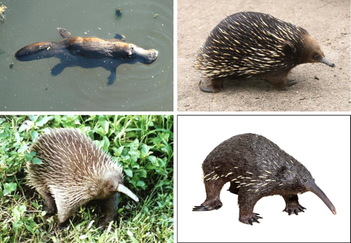

Monotremes (Order: monotremata) are mammals. They are the only group of living mammals that lay eggs, rather than bearing live young. The extant monotreme species are the platypus and the four species of echidnas. Monotremes are typified by structural differences in their brains, jaws, digestive tract, reproductive tract, and other body parts, compared to the more common mammalian types. Although they are different from almost all mammals in that they lay eggs, like all mammals, the female monotremes nurse their young with milk.
Monotremes have been considered by some authors to be members of Australosphenida, a clade that contains extinct mammals from the Jurassic and Cretaceous of Madagascar, South America, and Australia, but this categorization is disputed and their taxonomy is under debate.
All extant species of monotremes are indigenous to Australia and New Guinea, although they were also present in the Late Cretaceous and Paleocene of southern South America, indicating that they were also present in Antarctica, though remains have not been found there.
The five species of monotremes that exist:
All species of monotreme are considered at least vulnerable and some of them are critically endangered.